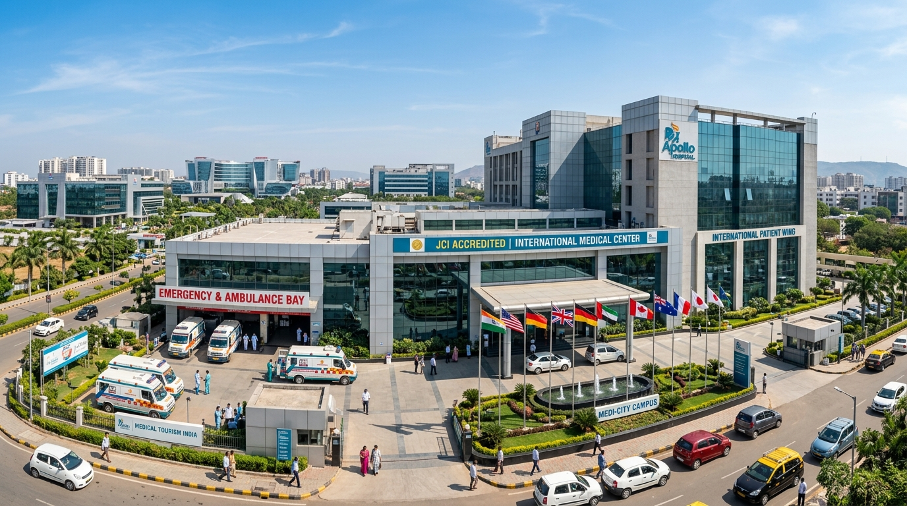

The India Healthcare Advantage
Over 500,000 international patients travel to India each year seeking complex surgeries and life-saving treatments.
60% to 80% Cost Savings
High surgical standards at a fraction of the cost in North America, Western Europe, or private Middle Eastern hospitals, including hospital stay and medications.
Immediate Care (Zero Waiting)
Unlike public healthcare systems with lengthy queues for bypass surgery or joint replacements, procedures in India are scheduled promptly upon patient arrival.
JCI & NABH Accreditations
Dozens of Indian hospitals possess Joint Commission International (USA) accreditation and national NABH certification, upholding rigorous infection control.
High-Precision Robotics
Widespread deployment of Da Vinci Xi robotic surgery systems, CyberKnife radiosurgery, Proton Beam therapy, and 3T intraoperative MRI imaging suites.
Western Trained Specialists
A large percentage of chief surgeons and senior consultants have completed fellowships and practicing residencies in the United Kingdom, USA, or Germany.
Warm Hospitality & Care
Indian healthcare culture emphasizes empathetic, patient-centric bedside care. Hospitals feature dedicated international patient lounges and multi-cuisine catering.
Representative Procedure Cost Comparison
Typical illustrative costs across international destinations (USD estimates for general reference).
| Medical Procedure | United States | United Kingdom | India (Accredited Centers) | Estimated Savings |
|---|---|---|---|---|
| Coronary Artery Bypass (CABG) | $90,000 – $130,000 | $30,000 – $45,000 | $5,500 – $7,500 | Up to 80% - 90% |
| Total Knee Replacement (Single) | $40,000 – $55,000 | $18,000 – $24,000 | $4,500 – $6,500 | Up to 75% - 85% |
| Total Hip Replacement | $45,000 – $60,000 | $19,000 – $26,000 | $5,000 – $7,000 | Up to 75% - 85% |
| Living Donor Liver Transplant | $300,000 – $450,000 | $140,000 – $200,000 | $32,000 – $42,000 | Up to 75% - 88% |
| Living Donor Kidney Transplant | $180,000 – $260,000 | $75,000 – $110,000 | $12,000 – $16,000 | Up to 80% - 90% |
| IVF Cycle (with ICSI) | $16,000 – $22,000 | $8,000 – $12,000 | $3,000 – $4,500 | Up to 70% - 75% |
* Disclaimer: Cost ranges are indicative benchmarks for educational comparison. Actual clinical costs vary depending on patient comorbidities, room type selection, doctor fees, and specific hospital package.
Major Healthcare Cities in India
Explore the five premier metropolitan hubs chosen by international medical travelers.

Delhi NCR (New Delhi, Gurugram, Noida)
The premier quaternary healthcare cluster in Asia. Houses mammoth medical cities with over 1,000 beds each, dedicated international wings, direct flight connectivity from across the globe via Indira Gandhi International Airport (DEL).

Mumbai (Financial & Quaternary Capital)
Celebrated for world-renowned oncologists, precision radiation therapy, and minimally invasive surgeries. Features premier institutions with sea-facing recovery rooms and immediate proximity to Chhatrapati Shivaji Maharaj International Airport (BOM).
Chennai (India's Health Capital)
Handles over 40% of international medical arrivals to India. World-renowned for organ transplantation records, specialized cardiology clinics, eye care institutes, and affordable accommodation for accompanying family members.
Bengaluru (Medical Technology & Silicon Valley)
Pioneered high-volume cardiac surgery under Dr. Devi Shetty's health city model. Known for cutting-edge AI-assisted diagnostics, pleasant year-round climate for recovery, and high density of English-speaking staff.
Hyderabad (Gastroenterology & Transplants)
A globally recognized hub for therapeutic endoscopy, hepatology, and living-donor liver transplants. Offers state-of-the-art infrastructure at exceptionally economical living and treatment expenses.
Explore How Much You Can Save
Get a personalized preliminary evaluation comparing top hospital choices in India for your diagnosis.